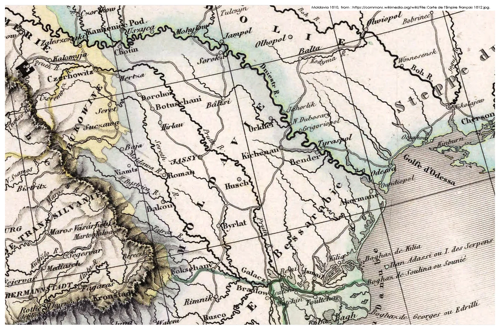
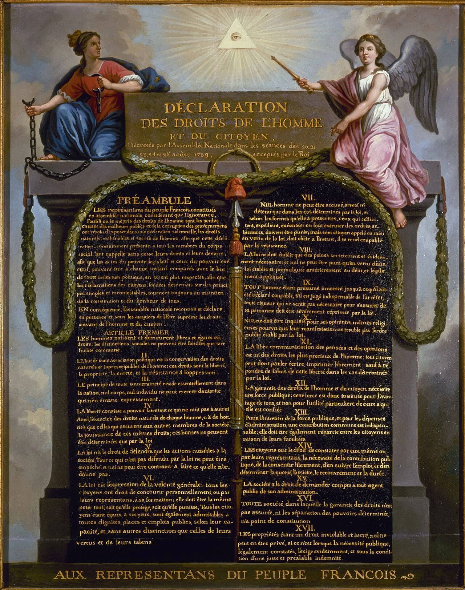
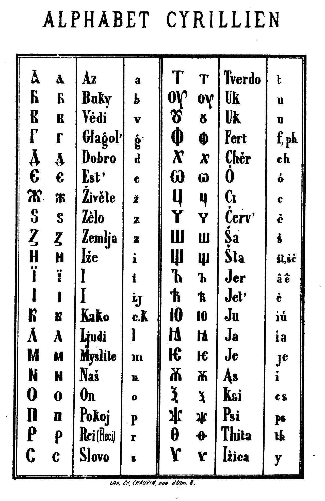
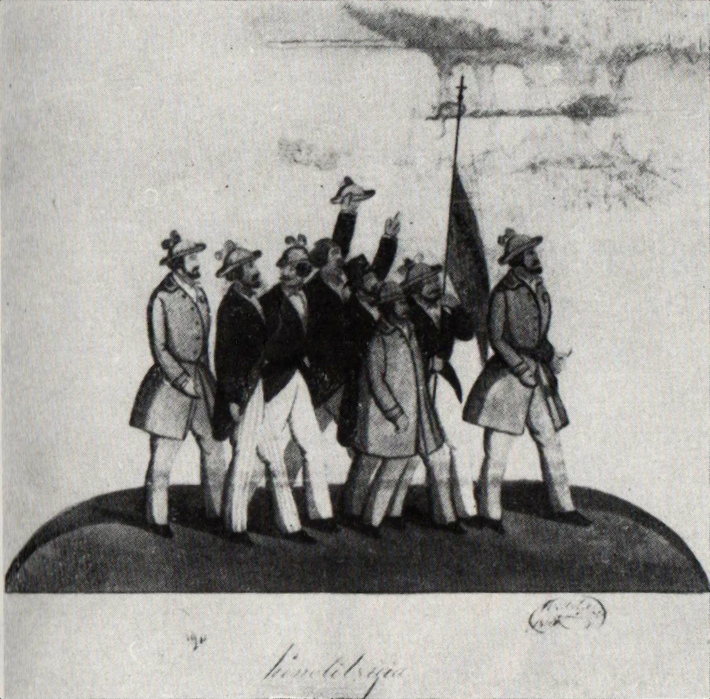
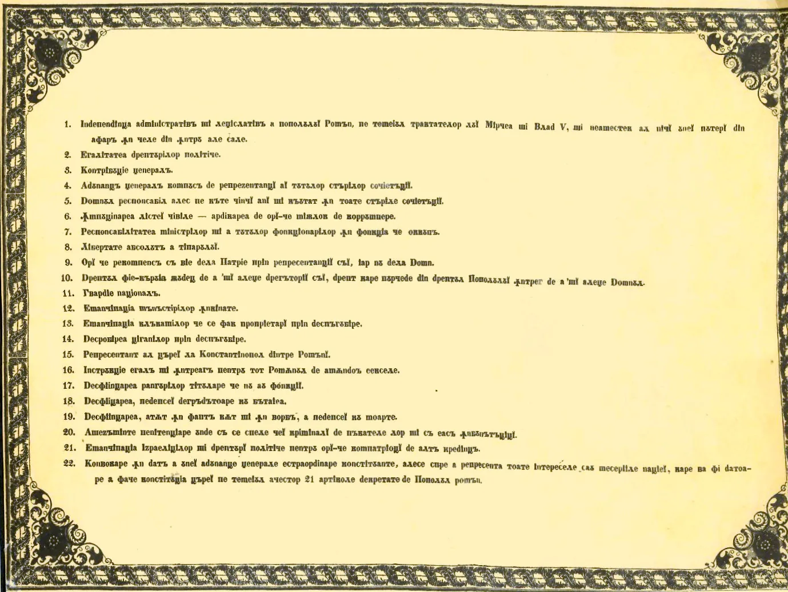
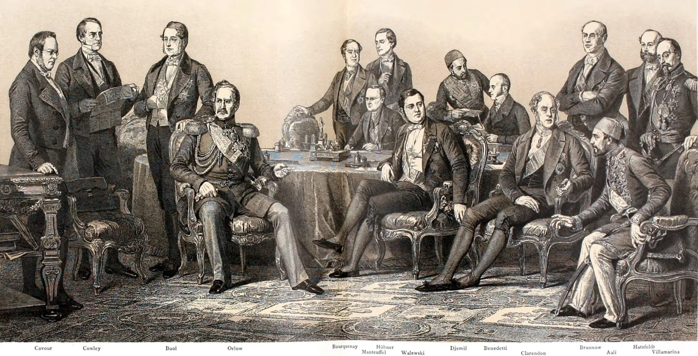
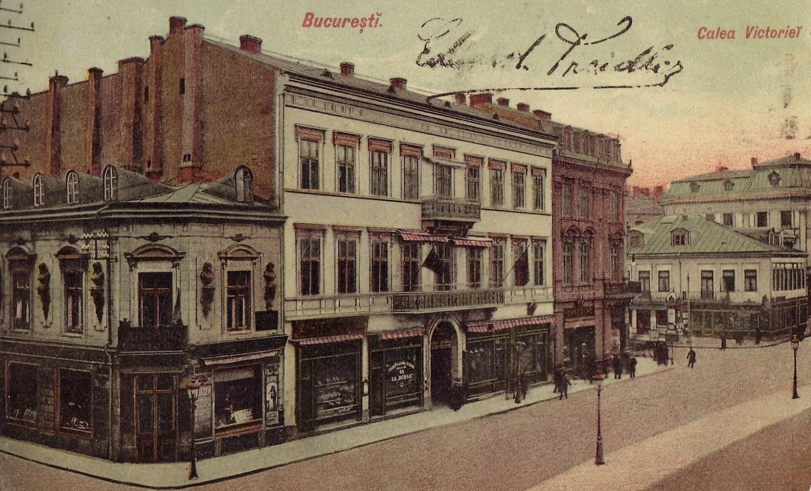

1810 · Before the distant horizon
Between three empires, a country could lose more than land.
Entre trois empires, un pays pouvait perdre plus que des terres.
Before a united Romania, Moldavia and Wallachia lay between Ottoman power, the Habsburg world and Russian expansion. What could be lost was more than territory: a language of law, a political imagination, a future of one’s own.
The Enlightenment and the French Revolution offered a distant vocabulary of citizen, nation and law—close enough to inspire, far enough not to absorb.
Avant la Roumanie unie, la Moldavie et la Valachie se trouvaient entre la puissance ottomane, le monde habsbourgeois et l’expansion russe. Ce qui pouvait se perdre était plus qu’un territoire : une langue du droit, une imagination politique, un avenir propre.
Les Lumières et la Révolution française offraient un vocabulaire lointain du citoyen, de la nation et du droit : assez proche pour inspirer, assez lointain pour ne pas absorber.
- West Habsburg world
- South Ottoman power
- East Russian expansion

The question
Why did a Romanian elite look to Paris?
Pourquoi une élite roumaine a-t-elle regardé vers Paris ?
Nineteenth-century France was a home of revolutionary ideas—change, meritocracy and equality.
La France du XIXe siècle était l’un des foyers des idées révolutionnaires : le changement, la méritocratie et l’égalité.
France offered a Latin relative, a political language of citizen and law, and a great power willing, at key moments, to make a Romanian future legible in Europe. The road from Paris to Bucharest runs through schools, bookshops, law courts and embassies.
La France offrait une parente latine, une langue politique du citoyen et du droit, et une grande puissance disposée, à des moments décisifs, à rendre l’avenir roumain intelligible en Europe. La route de Paris à Bucarest passe par les écoles, les librairies, les tribunaux et les ambassades.
Two timelines. One story.
FranceThe idea is born, argued, codified, projected.
RomaniaThe idea is learned, translated, contested, made useful.
A common political vocabulary
France
The Revolution invents the modern nation-state.
La Révolution française a inventé la nation moderne.

1789 rewrites the grammar of politics. Subjects become citizens. A kingdom becomes a nation. The sovereign people are tied to institutions: common law, administration, public schools, an army, a territory. In 1804, the Code civil gives Europe a working language for equality before the law, property, contract and civil life.
1789 réécrit la grammaire du politique. Les sujets deviennent citoyens. Un royaume devient nation. Le peuple souverain est lié à des institutions : droit commun, administration, école publique, armée, territoire. En 1804, le Code civil donne à l’Europe une langue pratique de l’égalité devant la loi, de la propriété, du contrat et de la vie civile.
portable
Romania
Before the state, there is a claim.
Avant l’État, il y a une revendication.
Moldavia and Wallachia live between Ottoman suzerainty and Russian pressure. Romanian is the language of a people, not yet the unquestioned language of government. In Habsburg Transylvania, the Școala Ardeleană—Samuil Micu, Gheorghe Șincai, Petru Maior and Ioan Budai-Deleanu—turns the Latin origin of the language into a political argument.
Au début du XIXe siècle, les Principautés roumaines de Valachie et de Moldavie sont sous la suzeraineté ottomane, avec une forte influence russe acquise au traité de Küçük Kaynarca (1774). La langue roumaine, parlée par les paysans, est exclue des institutions officielles, au profit du slavonphérique, puis du grec. Dans ce contexte, l’« École transylvaine » (Scoala Ardeleană) a joué un rôle moteur : Gheorghe Șincai, Samuil Micu, Petru Maior démontrent la continuité des Roumains avec les Daces, revendiquent l’origine latine de la langue, et formulent un programme d’émancipation culturelle. L’idée d’une nation roumaine, unitaire, de tradition latine, trouve là son fondement intellectuel.
In 1791, the Supplex Libellus Valachorum asked Emperor Leopold II to recognise Romanians in Transylvania as a constituent nation alongside the Hungarians, Székelys and Saxons. The petition was refused. In 1825, the Lexicon of Buda published a four-language dictionary using Latin script. Both acts sought the same thing: to place Romanians on Europe’s map as a people before nearby empires could erase them.
En 1791, le Supplex Libellus Valachorum demanda à l’empereur Léopold II de reconnaître les Roumains de Transylvanie comme nation constituante aux côtés des Hongrois, des Sicules et des Saxons. La pétition fut refusée. En 1825, le Lexicon de Buda publia un dictionnaire en quatre langues utilisant l’alphabet latin. Ces deux actes poursuivaient le même but : placer les Roumains sur la carte de l’Europe comme peuple, avant que les empires voisins ne les effacent.
The most intimate frontier
To be Latin, one needed a modern lexicon.
French widened what Romanian could say.
Pour être latin, il fallait un lexique moderne. Le français a élargi ce que le roumain pouvait dire.

Choosing the Latin script was an act of alignment. French was the prestige language of the schools, salons, press, law courts and embassies Romanian elites wanted to join. With Latin and Italian, it was the main conduit through which a modern Romance public vocabulary reached Bucharest and Iași.
Choisir l’alphabet latin fut un acte d’orientation. Le français était la langue de prestige des écoles, des salons, de la presse, des tribunaux et des ambassades que les élites roumaines voulaient rejoindre. Avec le latin et l’italien, il fut le principal vecteur par lequel un vocabulaire public roman et moderne atteignit Bucarest et Iași.
« Les Roumains ont toujours revendiqué leur origine latine… Le français est perçu comme la langue des « cousins latins ». »
“Romanians have always claimed a Latin origin. French is seen as the language of the Latin cousins.”
The Dicționarul de împrumuturi lexicale din limba franceză records nearly 30,000 Romanian entries with a French etymon. That is a dictionary inventory, not a measure of speech—but it gives the scale of the encounter.
Le Dicționarul de împrumuturi lexicale din limba franceză recense près de 30 000 entrées roumaines d’étymon français. C’est un inventaire lexicographique, non une mesure de la parole quotidienne — mais il donne l’échelle de la rencontre.
How ideas travelled: people, books, lectures, a revolution
Paris
The capital becomes a school.
La capitale devient une école.
Paris, in the nineteenth century, is an amplifier: universities, publishers, newspapers, salons, political clubs and a revolution watched in real time. While Metternich and the Concert of Europe seek restoration and preservation, Paris is the symbol of change.
Au XIXe siècle, Paris est un amplificateur : universités, éditeurs, journaux, salons, clubs politiques et une révolution vécue au présent. Alors que Metternich et le Concert européen recherchent la restauration et la préservation, Paris devient le symbole du changement.
the continent
Romanian elites in Paris
They go west to learn how a nation is made.
Ils vont à l’ouest pour apprendre comment une nation se fait.

« La jeunesse roumaine, formée à Paris, à Vienne, à Berlin, découvre les idées libérales et nationales. »
“Romanian youth, trained in Paris, Vienna and Berlin, discovers liberal and national ideas.”
Ion and Dumitru Brătianu sit through the lectures of Michelet, Quinet and Guizot. Around them, Bălcescu, Rosetti and others find what Paris is really selling: a transnational network of young Europeans and a working vocabulary for political action.
Ion et Dumitru Brătianu suivent les cours de Michelet, Quinet et Guizot. Autour d’eux, Bălcescu, Rosetti et d’autres trouvent ce que Paris offre vraiment : un réseau transnational de jeunes Européens et un vocabulaire opératoire pour l’action politique.
Simion Bărnuțiu, from Sălaj, was studying law in Sibiu when, in March 1848, he issued proclamations across Transylvania: Romanians should write their own future in their own name. He later continued his legal studies in Vienna and Pavia.
Simion Bărnuțiu, originaire de Sălaj, étudiait le droit à Sibiu lorsqu’en mars 1848 il lança des proclamations à travers la Transylvanie : les Roumains devaient écrire leur propre avenir en leur propre nom. Il poursuivit ensuite ses études de droit à Vienne et à Pavie.
Paris gave a young Romanian elite something Bucharest could not yet give them: the experience of being inside a revolution, and a Europe larger than the three empires around home.Paris donna à une jeune élite roumaine ce que Bucarest ne pouvait pas encore lui donner : l’expérience d’être au cœur d’une révolution, et une Europe plus vaste que les trois empires qui entouraient le pays.
The Springtime of Nations reaches the Romanian lands
France
1848: the Springtime of Nations.
1848 : le Printemps des peuples.
Paris is the first spark, not the whole story. In 1848, revolutions and national movements sweep across Europe. Every people ruled by dynasty or empire is asked the same question: can legitimacy be remade?
Paris est l’étincelle, non toute l’histoire. En 1848, révolutions et mouvements nationaux traversent l’Europe. Chaque peuple gouverné par une dynastie ou un empire se voit poser la même question : la légitimité peut-elle être refaite ?
citoyen · nation · constitution · droits
Islaz
Wallachia
A French repertoire, translated to a Romanian emergency.
Un répertoire français, traduit en urgence roumaine.

« Le programme est directement inspiré du libéralisme français, avec ses accents jacobins. »
“The programme is directly inspired by French liberalism, with its Jacobin accents.”
At Islaz, borrowed words become local demands: political equality, responsible government, emancipation of the peasants, land reform and union. The point is not to copy Paris. The point is to make a people able to govern itself.
À Islaz, les mots empruntés deviennent des exigences locales : égalité politique, gouvernement responsable, émancipation des paysans, réforme agraire et union. Il ne s’agit pas de copier Paris, mais de rendre un peuple capable de se gouverner.
Across the mountains, a parallel revolution is forming. On 3/15 May 1848, around forty thousand Romanians gather on the Câmpia Libertății outside Blaj. Bărnuțiu gives the defining address. Avram Iancu, a young lawyer from the Apuseni Mountains, leads volunteer bands in the hills. The Transylvanian revolution is crushed by Hungarian and Russian armies in 1849. Its leaders scatter to Wallachia, Paris and Vienna—and keep the idea of union alive.
De l’autre côté des montagnes, une révolution parallèle se prépare. Le 3/15 mai 1848, environ quarante mille Roumains se rassemblent sur la Câmpia Libertății, près de Blaj. Bărnuțiu y prononce le discours décisif. Avram Iancu, jeune juriste des monts Apuseni, dirige les bandes de volontaires dans les collines. La révolution transylvaine est écrasée par les armées hongroise et russe en 1849. Ses dirigeants se dispersent vers la Valachie, Paris et Vienne — et gardent vivante l’idée de l’union.
The Russian Empire
When allies become enemies.
Quand les alliés deviennent des ennemis.
A French-speaking, law-writing Romania was creating distance from the territorial appetite and autocratic political model of the Russian Empire, and later the USSR.
Une Roumanie parlant français et capable d’écrire ses propres lois prenait ses distances avec l’appétit territorial et le modèle politique autocratique de l’Empire russe, puis de l’URSS.
Bessarabia is annexed.
L’annexion de la Bessarabie.
Russia takes the eastern half of Moldavia by treaty with the Ottoman Empire. The people whose land is divided do not decide.
La Russie prend la moitié orientale de la Moldavie par traité avec l’Empire ottoman. Les habitants dont la terre est divisée ne décident pas.
Protector becomes pressure.
Du protectorat à la pression.
Russian influence tightens around the principalities. The administration modernises, but under an authoritarian shadow rather than national consent.
L’influence russe se resserre autour des principautés. L’administration se modernise, mais sous une ombre autoritaire plutôt que par consentement national.
The revolution is crushed.
La révolution est écrasée.
Russian and Ottoman pressure together end the Wallachian revolution. Hungarian and Russian armies crush the Transylvanian one. The students’ political lesson has an immediate imperial answer.
Les pressions russe et ottomane mettent fin ensemble à la révolution valaque. Les armées hongroise et russe écrasent la révolution transylvaine. La leçon politique des étudiants reçoit aussitôt une réponse impériale.
An ally takes territory.
Un allié prend du territoire.
After fighting beside Russia for independence, Romania is compelled to surrender southern Bessarabia to its ally.
Après avoir combattu aux côtés de la Russie pour son indépendance, la Roumanie est contrainte de céder la Bessarabie méridionale à son allié.
Annexation becomes remaking.
L’annexion devient refonte.
The USSR takes Bessarabia and Northern Bukovina. Arrests, deportations, resettlement and Russification follow the new border.
L’URSS prend la Bessarabie et le nord de la Bucovine. Arrestations, déportations, déplacements de population et russification suivent la nouvelle frontière.
The Romanian fear was not Russia’s foreignness.
It was replacing Istanbul with an even more fervent, ideological and centralised empire: Moscow.La crainte roumaine n’était pas que la Russie soit étrangère. C’était de remplacer Istanbul par un empire encore plus fervent, idéologique et centralisé : Moscou.
The diplomatic hinge: Napoleon III, union, law
France under Napoleon III
Paris turns sympathy into leverage.
Paris transforme la sympathie en levier.

France’s victory in the Crimean War breaks Russia’s exclusive protectorate over the principalities. Napoleon III backs their union. A Latin nationality on Europe’s eastern flank is both a cause and a strategic fact.
La Guerre de Crimée (1853-1856) et le congrès de Paris (1856) créent les conditions d’une nouvelle étape. La Russie perd son protectorat exclusif sur les Principautés ; la France et les autres puissances garantes sont désormais impliquées. Napoléon III, qui voit d’un œil favorable dans un pays d’origine latine en Europe orientale, soutient l’union.
a door
The Romanian answer
Union is made. Then it must be made real.
L’union est faite. Il faut ensuite la rendre réelle.
In 1859, Moldavia and Wallachia elect the same prince, Alexandru Ioan Cuza. In 1864, the state builds the legal machinery it needs to survive. The Romanian Civil Code of 1864 is drafted on the Napoleonic model, then adapted to local conditions.
Le 5/24 janvier 1859, Alexandru Ioan Cuza est élu prince de Valachie ; le 24 janvier, il est élu prince de Moldavie. Les deux Principautés sont désormais unies sous le même prince, mais pas encore sous une même Constitution. L’union est achevée par la Constitution du 1er juillet 1864 et la loi administrative du 2 décembre 1864. Cuza mène une politique de modernisation : code civil (1864), code pénal, code de procédure, réforme agraire de 1864 (émancipation des paysans par rachat), instruction publique, création de l’Université de Bucarest (1864). Le code civil roumain est une traduction presque littérale du Code Napoléon, adaptée aux conditions locales.
A French code gives the country something aspirational: equal legal standing, civil marriage, property, contract and a public state stronger than private patronage. The Civil Code was extended to Transylvania only in 1943, twenty-five years after union.
Un code français donne au pays un horizon d’aspiration : égalité devant la loi, mariage civil, propriété, contrat et un État public plus fort que les patronages privés. Le Code civil ne fut étendu à la Transylvanie qu’en 1943, vingt-cinq ans après l’union.
A European claim, made at home
French culture
A civilisation to make your own.
Une civilisation à faire sienne.
French stays the language of educated conversation, study, literature and diplomacy. Paris exports forms as much as words: boulevard, café, university, public school, civil service, capital city.
Le français reste la langue de la conversation cultivée, des études, de la littérature et de la diplomatie. Paris exporte autant des formes que des mots : boulevard, café, université, école publique, administration, capitale.
« Bucarest devient « la petite Paris ». »
“Bucharest becomes ‘Little Paris.’”
a public claim
Bucharest
A Latin nation chooses a German king.
Une nation latine choisit un roi allemand.

Bucharest’s boulevards, civic buildings and Belle Époque façades openly signal French urban prestige. “Little Paris” is a nickname the city has earned: a place that gives public life, taste and ambition the same address.
Les boulevards, les édifices civiques et les façades Belle Époque de Bucarest affichent ouvertement le prestige urbain français. « Le Petit Paris » est un surnom que la ville a mérité : un lieu qui donne à la vie publique, au goût et à l’ambition la même adresse.
« Carol I est un roi allemand dans un pays latin. »
“Carol I is a German king in a Latin country.”
With Napoleon III’s fall in 1870, the special French patronage behind union could no longer carry Romania’s eastern cause. A German dynasty offered continuity and diplomatic weight; French civic culture made European belonging visible at home. “Little Paris” was not imitation. It was a declaration that the country belonged in Europe.
Avec la chute de Napoléon III en 1870, le parrainage français particulier qui avait soutenu l’union ne pouvait plus porter à lui seul la cause roumaine à l’est. Une dynastie allemande apportait continuité et poids diplomatique ; la culture civique française rendait l’appartenance européenne visible chez soi. « Le Petit Paris » n’était pas une imitation, mais une déclaration : le pays appartenait à l’Europe.
A European crossroads
East and West. One home.
L’Est et l’Ouest. Un même chez-soi.
Romania is still a meeting place: Latin-speaking, shaped by French aspiration, with Hungarian, German, Ukrainian, Russian, Jewish, Turkish and other inheritances running through its cities and regions. That mixture is not a dilution of identity. It is the ordinary condition of a country at a crossroads.
La Roumanie reste un lieu de rencontre : latine, façonnée par l’aspiration française, avec des héritages hongrois, allemand, ukrainien, russe, juif, turc et d’autres encore dans ses villes et ses régions. Ce n’est pas une dilution de l’identité, mais la condition ordinaire d’un pays situé à un carrefour.
Languages that remain open
- românăthe common civic language
- magyarmother tongue of 6.3% of census respondents who declared one
- Deutsch · Türkçe · русскийhistoric communities, living cultural traces
- English · français · Deutschschool languages: routes out into Europe, not away from Romania
In 2024, 100% of Romanian upper-secondary general-education pupils studied English, 80% French and 17% German. These are study rates, not fluency.
The German thread
Europe did not arrive from one direction.
L’Europe n’est pas venue d’un seul côté.
Carol I’s Hohenzollern dynasty gave the young state continuity. Sibiu/Hermannstadt and Sighișoara still carry the urban inheritance of the Transylvanian Saxons, who settled here from the twelfth century. Klaus Iohannis, a Transylvanian Saxon and former mayor of Sibiu, served as Romania’s president from 2014 to 2025.
La dynastie Hohenzollern de Carol I a donné de la continuité au jeune État. Sibiu/Hermannstadt et Sighișoara portent encore l’héritage urbain des Saxons de Transylvanie, installés ici dès le XIIe siècle. Klaus Iohannis, Saxon de Transylvanie et ancien maire de Sibiu, a été président de la Roumanie de 2014 à 2025.
A country of many languages needs a centre. Romania’s centre is its own language, its civic state, and its European choice.Un pays de nombreuses langues a besoin d’un centre. Le centre de la Roumanie, c’est sa langue, son État civique et son choix européen.